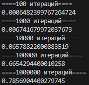
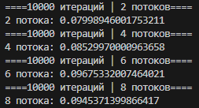
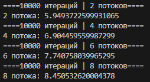
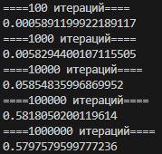
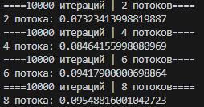
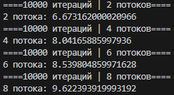
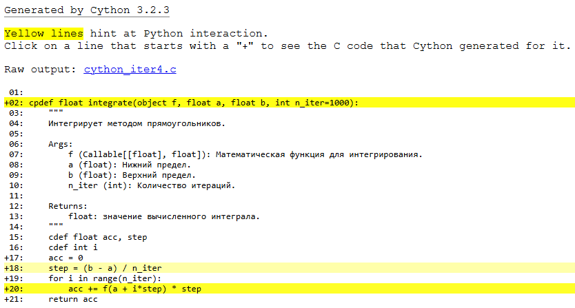

Лабораторная работа 10. Методы оптимизации вычисления кода с помощью потоков, процессов, Cython, отпускания GIL¶
Цель работы:¶
Исследовать методы оптимизации вычисления кода, используя потоки, процессы, Cython и отключение GIL на основе сравнения времени вычисления функции численного интегрирования методом прямоугольников, реализованной на чистом Python.
Ход работы¶
Итерация 1¶
Стартовая точка.
Файлы:¶
iter1.py - основной файл с функцией, замером времени выполнения и доктестами.
test_iter1.py - файл с pytest'ами.
Результат:¶

Итерация 2¶
Оптимизация с помощью потоков.
Файлы:¶
iter2.py - основной файл с функцией и замером времени выполнения.
Результат:¶

Итерация 3¶
Оптимизация с помощью процессов.
Файлы:¶
iter3.py - основной файл с функцией и замером времени выполнения.
Результат:¶

Итерация 4¶
Профилирование и оптимизация функции integrate с помощью Cython.
Файлы:¶
iter4.1.py - файл с измененной функцией 1 итерации и замером времени выполнения.
iter4.2.py - файл с измененной функцией 2 итерации и замером времени выполнения.
iter4.3.py - файл с измененной функцией 3 итерации и замером времени выполнения.
cython_iter4.pyx - файл с отпрофилированной основной функцией.
setup_iter4.py - файл для сборки.
setup_iter4_annotated.py - файл для сборки с аннотацией.
Результаты:¶
1 итерация

2 итерация

3 итерация

Аннотация для функции

Итерация 5¶
Использование noGIL и Python 3.14.
Запуск noGIL происходил с использованием команды python -X gil=0 ...
Файлы:¶
iter2.py - файл с функцией, использующей потоки и замером времени выполнения.
iter4.2.py - файл с измененной функцией 2 итерации и замером времени выполнения.
Результаты:¶
Python, noGIL

Cython, noGIL

Python, 3.14

Cython, 3.14

Применение примитивов синхронизации имеет смысл только для защиты общих данных. Для процессов, Cython с отпусканием GIL и чистых вычислительных задач без разделяемого состояния они не нужны и даже вредны для производительности.
Вывод¶
Наилучший результат показала комбинация потоков с Cython и отпусканием GIL, что позволило преодолеть ограничения GIL за счет истинного параллелизма. Использование процессов оказалось неэффективным из-за высоких накладных расходов на межпроцессное взаимодействие и копирование данных. Python 3.14 продемонстрировал недостаточный прирост производительности. Cython обеспечил значительное ускорение всех вычислительных функций благодаря компиляции в нативный код и оптимизациям на уровне C.